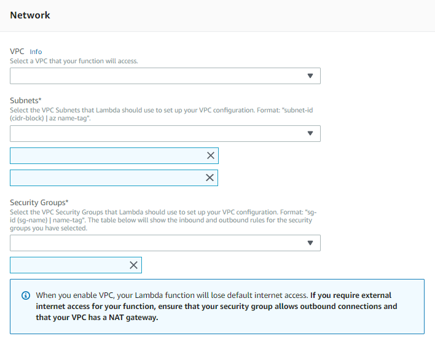

This document tells you the prerequisites and steps to deploy a command line procedure to AWS Lambda and AWS API Gateway.
"AWS Lambda lets you run code without provisioning or managing servers. You pay only for the compute time you consume - there is no charge when your code is not running." ref.: https://aws.amazon.com/lambda/
The main benefits of deploying to serverless platforms are the following:
- No worry about infrastructure at all.
- No need to manage, configure or install any server.
- No need to rent or buy any server.
- 24/7/365 up time for (almost) free. (You pay only if the App is used.)
- AWS Lambda is used in order to Deploy Code that will be run in the Cloud.
- Deployment of command line procedures
- Java Generator only
- Requires AWS Account and AWS API Key
- If using Image, Audio, Video, BlobFile data types => Storage Provider property must be used. This is because all App multimedia must be served from an external URL, such as Amazon S3.
- Not supported
- File/read write access as Blob data type, Excel, PDF Reports.
- Each time the function is triggered, its execution must not last more than 5 minutes. Check for this limit and others here.
- Build the main command line procedure with Java Generator.
- Select the procedure to deploy using Deploy Applications tool.
- From the Target Dropdown, select: "AWS Lambda Function deploy (Main Procedure Only)"
- Set AWS Access Key Id, AWS Secret Access Key*** and AWS Default Region.
- Set Application Name and Stage Name (ex: v1, v2, v3).
- Click "Deploy".
That's it!
At the final step, GeneXus will print out the final URL.
You can use it now in the Smart Devices Generator's Services URL property.
Some important notes:
***AWS Access Key requires Custom Policy: IAM Serverless Policy for Serverless Deploy OR just aws:policy/AdministratorAccess
The AWS Lambda Function deployed must have access to the Database (should be in the same VPC and Security Group). You will have to configure it manually in the AWS Lambda Function Console.

This feature is available as of GeneXus 16.
|